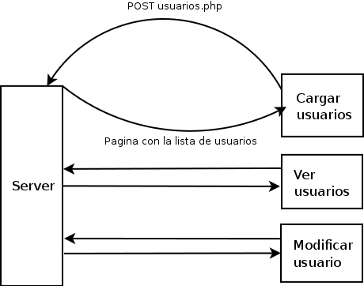
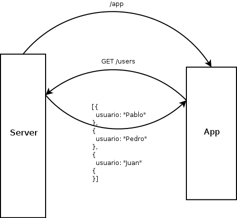

HTML + CSS + JS
Aplicaciones, que normalmente se instalan desde un store (appstore, playstore, marketplace, etc) y que se pueden instalar independientemente en un dispositivo (pc, tablet, telefono) haciendo uso de los recursos del mismo (llamadas, gps, contactos, etc.)
Nos permite ejecutar código js en un entorno dentro de nuestro sistema operativo.
Incluso incluye modulos para acceder a recursos del mismo (filesystem, procesos, etc)
Nos permite crear, mediante plugins aplicaciones que accedan a recursos nativos
Se instala a través de npm y provee una CLI para crear y administrar nuestro proyecto.
$npm install -g cordova
Apps desarrolladas con tecnologias web. Pueden ser instaladas por el usuario, son independientes y pueden ser diseñadas para funcionar offline.
{
"name": "Tabu",
"description": "¡Juga al clásico juego de Tabu con tus amigos!",
"version": "1.1.1",
"launch_path": "../index.html",
"fullscreen": "true",
"icons": {
"60": "/img/tabu-icon.png",
"128": "/img/tabu-icon-128.png"
},
"developer": {
"name": "Tehsis",
"url": "http://tehsis.com.ar"
},
"default_locale": "es"
}
Alojadas/empaquetdas - Privilegiadas - Certificadas
Conjunto de APIs que nos permite acceder al hardware y/o recursos de los dispositivos.
// Vibrar por un segundo (o mil milesimas)
window.navigator.vibrate(1000);
// Hagamos bailar nuestro telefono
window.navigator.vibrate([200, 100, 200]);
// Podemos saber el nivel de bateria del dispositivo
console.log(window.navigator.battery.level)
// O saber si esta enchufado
consoe.log(window.navigator.charging);
Actualmente poseo de bateria
var notificacion =
navigator.mozNotification.createNotification("Atencion!", "Te llego una notificacion");
notificacion.show();
window.addEventListener('devicelight', function(event) {
if (event.value < 50) {
console.log("Esta oscuro");
} else {
console.log("Esta clarito");
}
});
¡Que lindo se ve!
¡Para! ¡Me encandilas!
¡Che! ¡No veo nada!


¡Sorpresa! Las mismas que usamos en web
Y todo el poder nativo.
¿Preguntas?